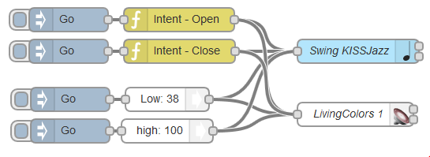

Intents : a language to make nodes speak together
Some Node-RED Nodes produce values on the msg flow, some nodes consumes them.
The problem is that there is no definition on how to express something in the flow.
For instance, a zwave library named OpenZWave returns “true” or “false” when a contact sensor is opened or closed.
And the PiFace board expect 0 or 1 on the flow msg payload to turn on its LED.
And the node-red-contrib-lifx for LIFX bulb expects a payload like this one:
{
payload: {
on: true,
hue: 0xCC15,
// etc…
}
}
to switch on a bulb.
Thus a function node is mandatory before the node-red-contrib-lifx to “translate” the flow in the expected format and the user has to use javascript just to link a switch to a bulb…
How can all these work together without function nodes that adapts the flow?
The proposal solution: Intents
The Thingbox contains such a language by defining the way the flow should be defined.
For intance, to “open” something (understand switching a light on, turning a radio on…) the msg should contain msg.intent=1.
A node for the thingbox should understand intents so it will easily fit into the flow.
The intents library
The following intents are defined:
-
Open/switch On msg.intent=1
-
Close/switch Off msg.intent=0
-
Invert: this changes close to open and vice et versa.
-
More msg.intent=2. Use this intent to add more sound, more light…
-
Less msg.intent=3
-
NoIntent: in this case, msg.intent === undefined
-
Color msg.color allows to set a RGBW value from a color panel
-
Intensity: allow to set a value between 0 and 100 with a slider
There are nodes in the palette for each intents. They allow to set an intent on the flow without having to use a javascript function.
Pictures
If a picture is in the flow, it’s absolute pathname should be in msg.picture.
This is done by nodes camera, picturepicker and node ledmatrix use it.
Colors
If a color is in the flow, it’s value should be in msg.color.
City
If a city is in the flow, it’s value should be in msg.city.
The ‘message’ intent
The payload is dedicated to the next node in the flow. Use msg.message to set a payload equivalent message dedicated to human.
A temperature node ouputs the folowing msg:
{
payload: "20.7",
message: "The temperature of the office is 20.7 °C"
}
The Display node is intent aware: it displays the msg.message instead of the payload if it exists. But the MQTT-out node sends the payload to the broker.
Sample
Here is an example where the same intents are used to monitor both a sound and a hue bulb: the open starts the sound and switch on the light. Same for close. Also the intensity node sets the level of the sound as well as the intensity of the light at the same time:

Avanced
Nodes should handles intents form the more specific to the less. For instance, a sound node should search its parameter into the “sound” track first, then the “value” then the “payload”.